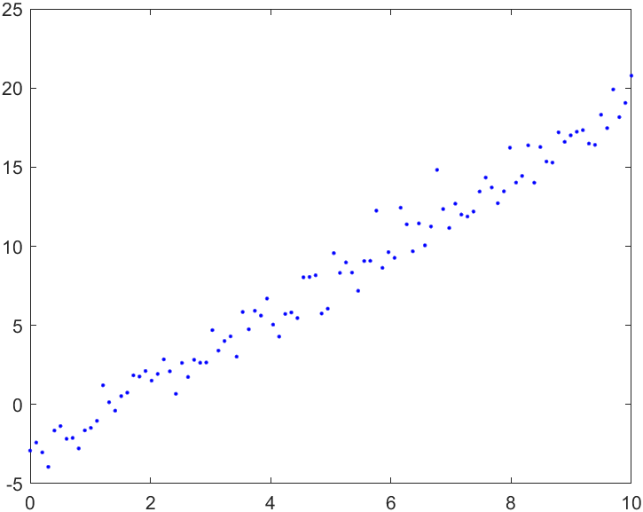

Github Repository
Github RepositoryLineare Approximation
Contents
Voraussetzungen
mathematische Grundlagen der linearen Approximation
Lerninhalte
Realisierung einer Routine zur linearen Approximation
Lineare Approximation¶
Aufgabe 1¶
Erzeugen Sie sich auf Basis folgender Geradengleichung \( y = 2.2 x - 3.1 \) Werte im Intervall \(x \in [0,10]\). Modifizieren Sie die entsprechenden y-Werte so, dass diese normalverteilt von der exakten Geradengleichung abweichen (Abbildung). Gehen Sie dabei zunächst von \(n=100\) Messwerten aus.
{kind=link}
n=100
x=linspace(0,10,n)
y=f(x) %Erzeugen der y-Werte mittels zu erstellender Funktion f(x)
y=y+randn(size(y)) %Erstellen des Störsignals
Aufgabe 2¶
Sie haben eben die Messwerte simuliert. Sie wollen diese Punkte nun mit Hilfe eines Polynoms approximieren. Schreiben Sie dazu ein Programm, welches eine Regressionsgerade durch diese Punkte legt.
Verwenden Sie dabei nicht die polyfit-Funktion! Berechnen Sie stattdessen die Koeffizienten der Regressionsgeraden.
Kurzer Rückblick
Die Gleichungen
nennen wir die Normalengleichungen.
Sie definieren ein lineares Gleichungssystem für die Koeffizienten \(a_k\).
Für den Polynomgrad \(m=1\) ergibt sich beispielsweise das System:
Dabei entspricht \(n+1=\) der Anzahl der Messwerte.
% SPACE FOR THE SOLUTION
Aufgabe 3¶
Stellen Sie Messpunkte, Regressionsgerade und die exakte Geradengleichung nun in einem Plot dar.
Testen Sie außerdem, was mit der Regressionsgerade bei kleinem bzw. großem \(n\) passiert. Überlegen Sie sich dabei selbst, was “klein” bzw. “groß” bedeutet.

% SPACE FOR THE SOLUTION